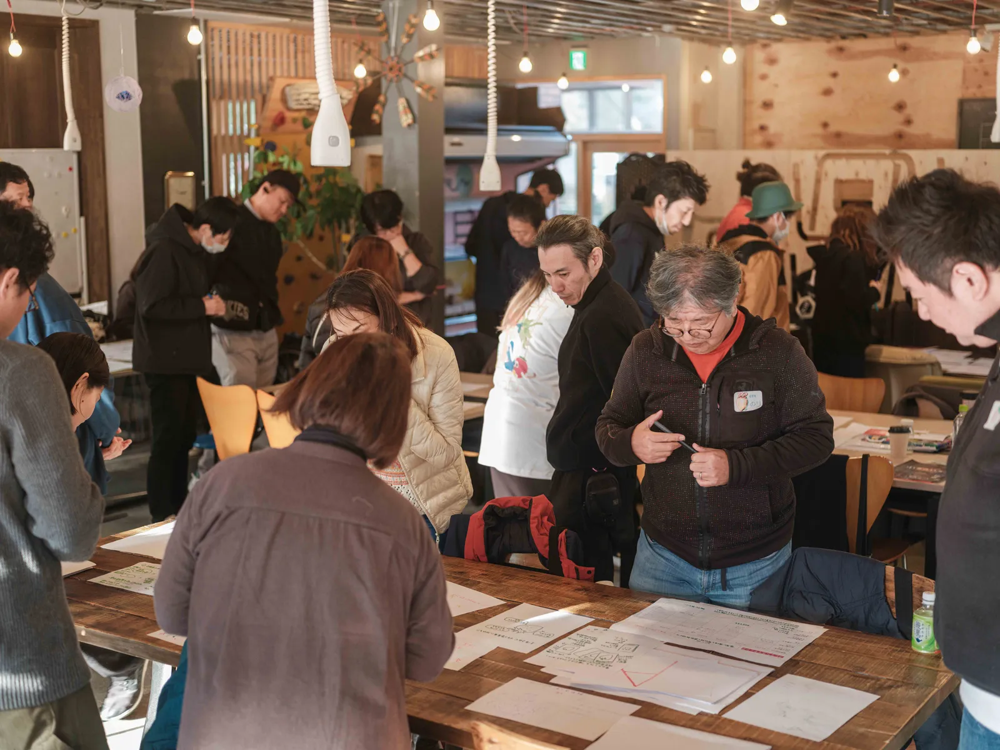
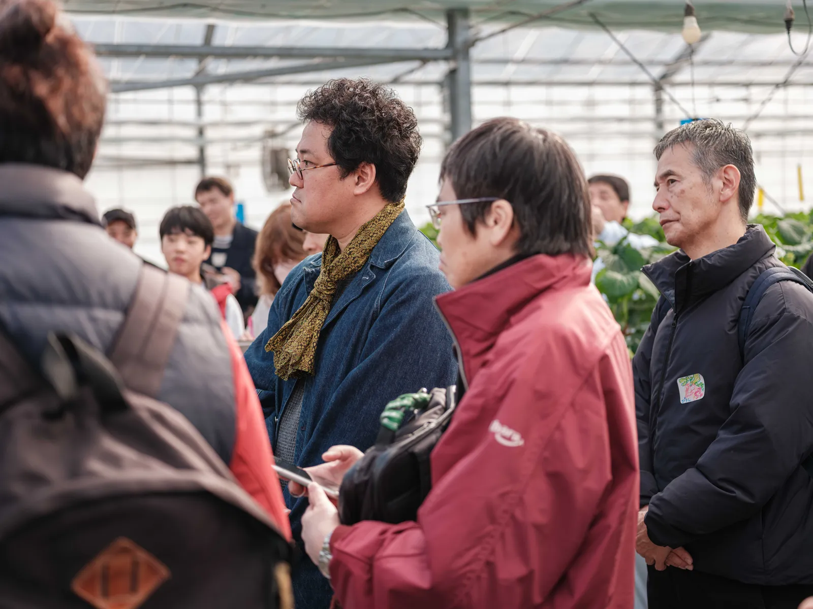
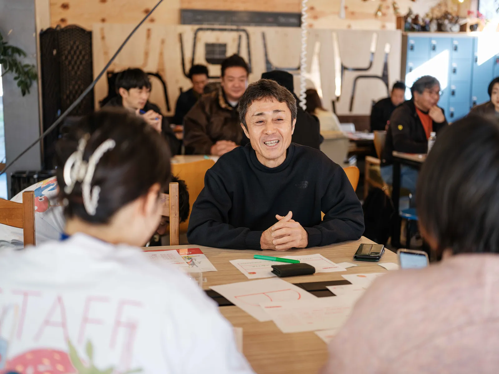
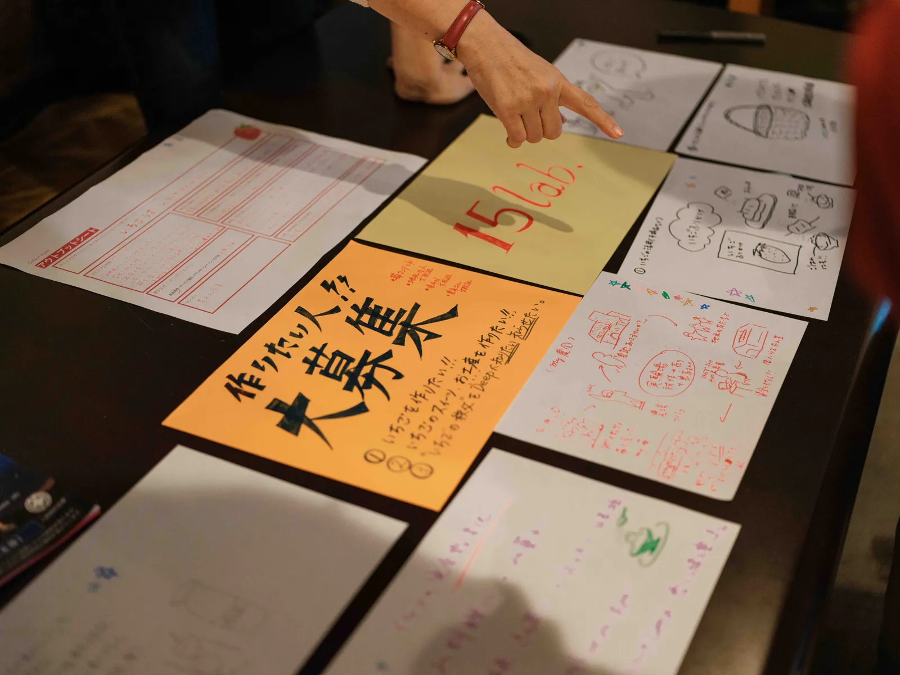

出店
埼玉いちご祭り2026 出店
埼玉スタジアム2002 ／ 来場者4万人（2日間）
いちご塩をはじめとした商品を販売。前年度は売上316,350円で全商品完売多数。
EVENTS
WS・出店・お披露目会など、これまでの活動アーカイブ
現在、次回イベントの日程を調整中です。
詳細が決まり次第、LINEオープンチャットでお知らせします。
REPORT
これまでに実施したワークショップ・出店の記録
埼玉スタジアム2002 ／ 来場者4万人（2日間）
いちご塩をはじめとした商品を販売。前年度は売上316,350円で全商品完売多数。

横瀬町町民会館・駐車場 ／ 6,000人/日 × 2日間
いちごカード、キーホルダー、いちご塩の3チームが成果を発表。来場者からのフィードバックを収集。

秩父高校体育館 ／ 高校1年生175名
地域探究「秩父のいま・これまで・これから」の授業としてアイデア出しを実施。129件のアイデアが集まった。

Area898（横瀬町） ／ 45名
農家見学からワークショップまで丸一日。6チームから6つの商品アイデアが誕生。読売新聞、秩父経済新聞、Yahoo!ニュースに掲載。

埼玉県秩父農林振興センター ／ 農家8名
プロジェクト概要説明と秩父地域のいちご農家さんとの意見交換を実施。

埼玉スタジアム2002 ／ 来場者4万人
いちご塩 CHICHIBU ICHIGO SALT が初お披露目。売上316,350円で全商品完売多数の手応え。
写真と詳細レポートは順次追加していきます。